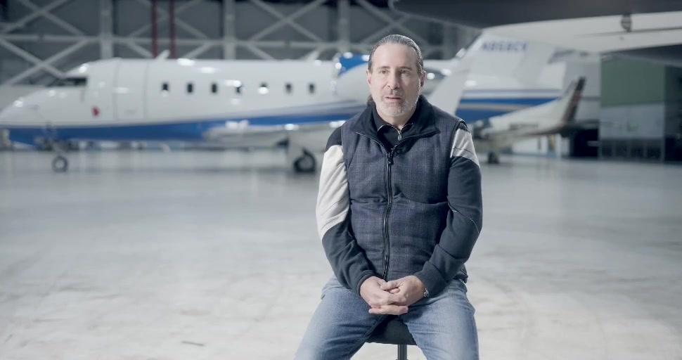
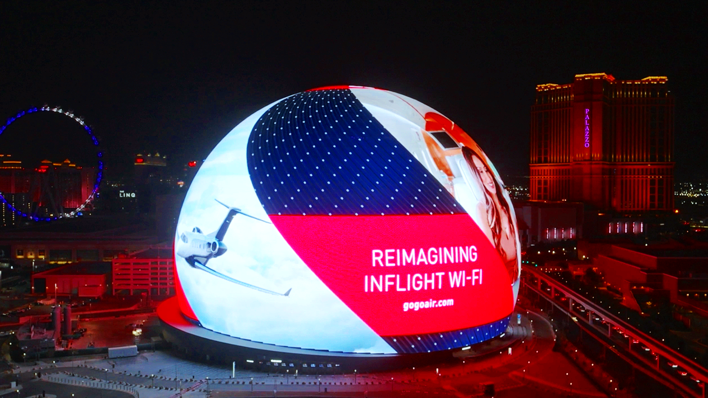
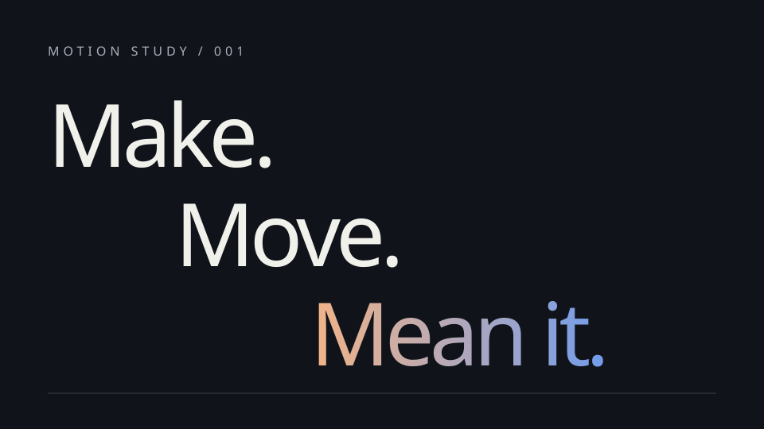

Completed film01 / Product storytelling
SkyQuest
Making the invisible visible.
ART DIRECTION / MOTION / CREATIVE TECHNOLOGY
I’m Dale. I turn ideas into visual stories,
moving identities and tools for making.
DENVER / BOULDER · OPEN TO CONVERSATION
01 / SELECTED WORK
From a product story to a screen the size of a building. From a single frame to a system that keeps moving.

Completed filmMaking the invisible visible.

Installed campaignBeyond the rectangle.

Original prototypeA system for the next idea.
 Original artwork / actual output
Original artwork / actual outputFrom idea to interface.
Showing all 4 projects.
02 / CREATIVE TECHNOLOGY
Browser tools, spatial experiments and practical digital products. Explore nine projects with their actual proof, contribution and scope.
Make the audience and the central idea clear before making anything move.
Connect type, image and motion into something that feels like one idea.
Leave useful systems, organized material and room for the next iteration.
04 / THE NEXT CONVERSATION